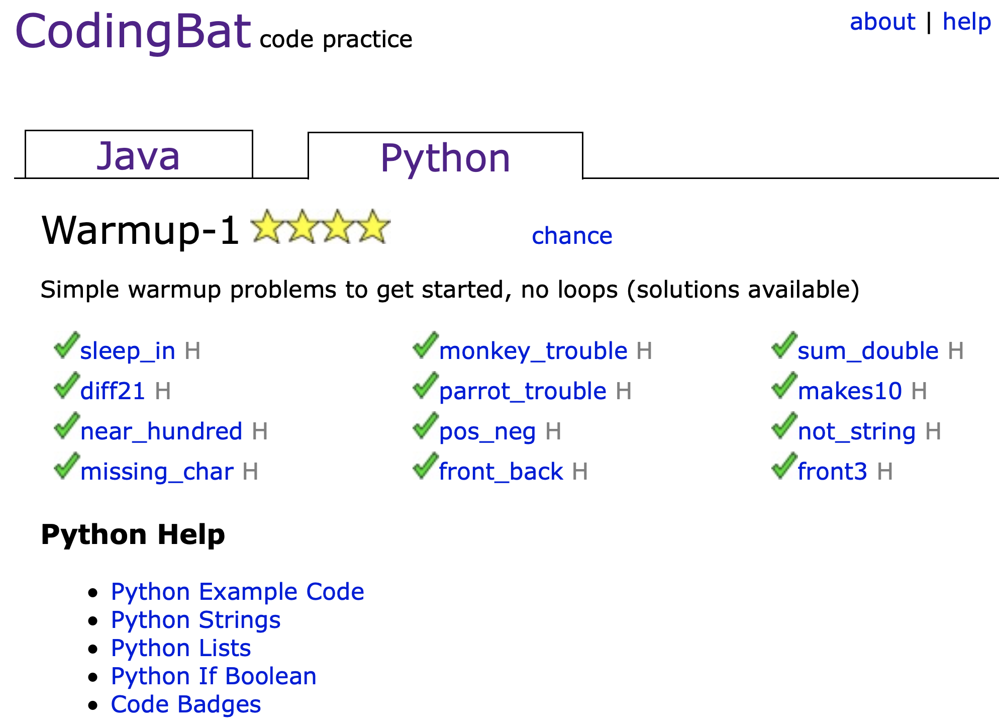

Since starting my degree in computer science, I’ve received several requests from friends and family for advice on getting started with programming, and in particular, getting started with Python programming. In this post, I

Coding Bat provides an invaluable supply of simple programming puzzles. Users create their own accounts and can see their progress as they through the fundamentals of Python syntax and logic. When I taught programming last summer, I had students do several problems from each section as homework and left the rest to be done at the student’s discretion.
On this site, I urge you to pause after achieving each correct solution. Programming is a craft, and you should constantly ask yourself: how could I have written this code more concisely? How could I make this solution simpler? How could I have solved the problem faster?
If you’re having trouble getting started, make sure to check out the Coding Bat’s example code and tutorials here.
Enjoy!
Note that for the casual programmer, this section might be unnecessary, as the fundamentals acquired in step 1 may be sufficient for your purposes. If this is the case, feel free to skip to step 3.
Soon Coding Bat problems will become too easy. At this point I’d recommend checking out USACO, Hacker Rank, and LeetCode for challenging competitive programming and interview problems. Here you’ll learn more advanced data structures and gain valuable exposure to the algorithmic demands central to software engineering and computer science.
If you’re particularly interested in preparing for technical interviews, I’d recommend the classic texts: Elements of Programming Interviews and Cracking the Coding Interview.
Now’s the time to jump right in. You know functions, datatypes, if statements, for loops, classes, and objects? Then you probably know enough to start working on whatever projects you find exciting. Maybe you’re interested in neural networks. Or video games. Or statistics for biomedical research. Find some tutorials and get after it!
For inspiration check out Pyxeled, a project I programmed in Python to convert regular images into pixel art.
As mentioned briefly in the first section, I taught Python programming last summer. For about four weeks, in addition to the research I was doing at UT, I lectured a few hours each day at a Chinese school in Austin. Until then I had no prior formal education or work experience with Python. However, that summer, mentoring these younger students burned into me both the fundamentals and elusive idiosyncrasies of the language. When you’ve reached an appropriate proficiency with Python, I highly recommend tutoring other students or friends who are learning the language.
This last one’s a warning: Be prepared to Google.
A lot.
Everything.
How do I reverse an array in Python? Beats me, Google it.
What’s the difference between Python versions 2 and 3? Literally everything. Just kidding, Google it.
Not sure what are these classes and objects things in Python? Google it. Your mind will be blown.
Why am I getting an error message? Idk Google it.
Why am I still getting the error? Do I look like Google?
You get the picture.
This process can be annoying and frustrating and time-consuming. But recognize that in this endeavor you’re not just learning how to program. You’re learning how to teach yourself difficult concepts and solve stubborn problems—skills far more valuable than knowledge of any individual coding language.
Very, very quickly Stack Overflow becomes your best friend, as does the online documentation for Python. Online, you’ll find tutorials, textbooks, and YouTube videos on everything from installing Python to building scalable web servers, from the basics of Python syntax to the most confusing datastrucsures and algorithms. Good luck!